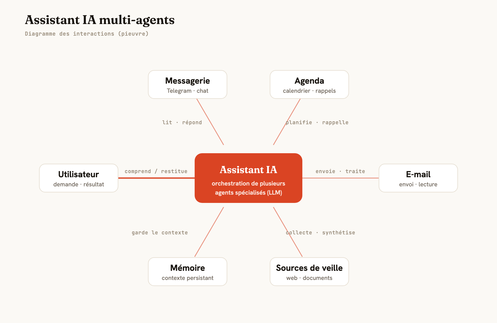

Un assistant personnel qui orchestre plusieurs agents IA pour automatiser mes tâches.
Concevoir un assistant capable de comprendre une demande et d'exécuter des tâches de bout en bout (organisation, veille, rappels, suivi de projets), pour gagner du temps sur le récurrent.
Python · Claude / LLM · Architecture multi-agents · Intégrations API

Un système qui tourne seul et exécute des tâches du déclenchement jusqu'à la restitution.